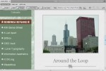

![ Türk Tarihinden Portreler][]Kitap bir çok Türk büyüğünün biyografilerini içinde barındırıyor. Kısa kısada geçilse güzel bir derleme olan kitap bizlere Türk büyüklerini hatırlatıyor. Türk tarihine iyi yönde etkisi olanların yanı sıra kötü yönde tesir eden şahıslarıda barındıran güzel bir kitap. Kitaptan aldığım bir kaç not - Hükümdara yakınlık yakıcı ateştir. - Bir ...
devamını oku09 Haziran 2008 web'den seçme haberler
- Html mailing nasıl kodlanır. Bağlantı
- CSS ve tipografi ile 10 uygulama. Bağlantı
- Sitelerde bir çok yerde javascript kullanıyoruz. Buda beraberinde bazı yavaşlamalar getiriyor. Bunu en aza indirebilmek için güzel bir makale yazmışlar. Bağlantı
- jQuery yardımı ile kaydırma çubuğu hareketi ile içeriği yüklemek. Bağlantı
- Script injection ataklarını anlamak. Bağlantı
- Web sitelerinde ...
04 Haziran 2008 web'den seçme haberler
- Yeni çıkacak internet tarayıcılarının karşılaştırması. Bağlantı
- Günlüğümüze email adresi eklemeyi anlatan bir makale. Buradaki fark javascripti le ekleyip istenmeyen epostaları engellemek. Bağlantı
- Tarayıcılar için CSS düzeltmeleri. Bağlantı
- Güzel WordPress temaları. Bağlantı
- ASP.NET ve Culture ayarları - Daron Yöndem Bağlantı
- jQuery yardımı ile klavyeden sayfalarda gezinme. Bağlantı
- Güzel bir SQL Server ...
Siteye Yorum Sayfalama Eklentisi (WordPress Paged Comments) Ekledim
Daha önce bir kaç kere aklıma geldi ama yapamadığım bir işti. En son bir iki istek gelince bu yönde kurmaya karaverdim. Aslında ben buraya eklentinin nasıl ekleneceğini yazmayacağım. Bir kaç ipucu ekledim onları yazacağım. Sırrı Özden'in Türkçeye çevirdiği eklentiyi ben orjinal sitesinden yükledim. Görünümü değiştirmek için stil dosyama bir ...
devamını okuCSS İpucu 16: Evrensel seçicilerde yazıtipi kısaltması kullanımında sorun
Evrensel seçicisi olan olan * ile yaptığımız font tanımları sorun çıkarıyor. Örneğin
* { font:10px/1.5em Verdana, Arial, Helvetica, sans-serif; }
Tanımını yaptığımızda sayfalarımızda tanımladığımız <strong> ile kalınlaştırdığımız metinler normal görünüyor. Bunun sebebi yukarıda yaptığımız tanım. Bunu yerine tek tek tanım yaparsak sorun kalmıyor.
devamını oku*{ font-family: Verdana, Arial, Helvetica, sans-serif; font-size:10px; line-height ...
Adobe Macromedia Dreamweaver CS4 Beta
Adobe Macromedia Dreamweaver CS4 Betası çıktı yeni özellikleri ile birlikte. Aslında birçok web kodlayıcısının beklediği değişikliklerdi bunlar.
Gerçek Görünüm (LiveView) özelliği

Bu özellik ile sayfamızın web tarayıcılarında göründüğü gibi görmemizi sağlıyor. Ayrıca CSS ve javascript ile dizayn kısmının aynı anda açılması ile FireBug'a benzer kullanım olanağı sunsa da daha ...
devamını oku28 Mayıs 2008 web'den seçme haberler
- "Tasarımcılar için SEO Rehberi" - siberkultur.com Bağlantı
- jQuery ile animasyonlu açılıp kapanan katmanlar yapmak. Bağlantı
- iFrame gibi davranan katmanlar oluşturmak. Bağlantı
- Design Shack CSS 3 anlatmaya devam ediyor. Bu makaledeki konu ardalanalar(background) ve yeni özellikleri. Bağlantı
- Türk Blog Yazarları ve Acı Gerçekler - listeniz.net Bağlantı
- Google javascript kütüphanelerini host ...
26 Mayıs 2008 web'den seçme haberler
- CSS ile düzenlenmiş tablolar. Bağlantı
- input ve button arasında farklılıklar. Bağlantı
- CSS ile mesaj kutuları hazırlamak. Bağlantı
- jQuery ile yapılmış güzel bir tarih aralığı seçimi. Bağlantı
- CSS ve Jquery ile yapılmış güzel bir menü örneği. Bağlantı
- jQuery yeni sürümü çıkmış 1.2.5 bazı sorunlar giderilmiş. Bağlantı
- "Tek bir bilgisayarda ...
23 Mayıs 2008 web'den seçme haberler
- Metinleri büyütmek için css ve javascript ile yapılmış örneği. Bağlantı
- Adobe Flash Player yeniliyor. FlashPlayer 10 betas ıçıkmış. Bağlantı
- "ASP.NET içerisinde Web.Config Inheritance'ı engellemek" - Daron Yöndem Bağlantı
- Asp.Net MasterPage kullanım ipuçları. Bağlantı
- Favori ikon kullanmanın avantajları. Basit ama güzel bir bilgi. Bağlantı
- 35 adet WordPress kullanışlı ...
14 Mayıs 2008 web'den seçme haberler
- 1 piksel kırılma ile yuvarlak kenarlı köşeler yapmak. Bağlantı
- Güzel bir Firebug makalesi. Bağlantı
- Butonların web tarayıcılarına göre kenar içi boşluğu(padding)
farklılıkları. Bağlantı
- CSS performansı hakkında güzel bir makale. Bağlantı
- Asp.net'de jquery yardımı ile takvimden tarih seçme uygulaması. Bağlantı
- jQuery'de uzmanlaşmak isteyenler için güzel bir makale ...